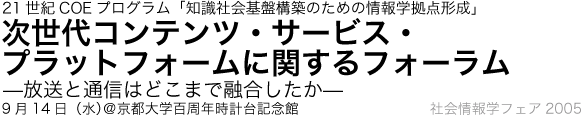

日時：９月１４日（水）１０：００開始
場所：京都大学百周年時計台記念館内百周年記念ホール
参加費：無料
21世紀の知識社会基盤を構築する上で、通信と放送の融合にもとづく知識のアクセス基盤がますます重要になってきています。このような背景の中、京都大学の知識基盤COEプログラムでは、その中で、Webと放送の融合などについて研究を行なってきております。
今回のフォーラムでは、「放送と通信はどこまで融合したか」をメインテーマとして、産官学の立場から多様なゲストをお招きして講演をいただきます。奮ってご参加頂きますようお願い申し上げます。